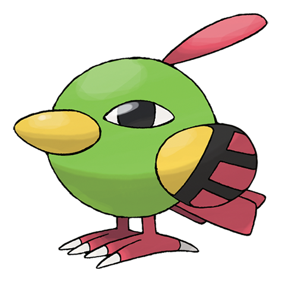

Estadisticas
Hp: 40 Ataque: 50 Defensa: 45 Ataque Especial: 70 Defensa Especial: 45
Velocidad: 70 Total: 320
Trepa con gran habilidad por el tronco de los árboles, donde aprovecha
para picotear los brotes nuevos.
Altura: 0,2M Peso 2,0Kg Categoria: Pajarito Habilidad: Sincronia, Madrugar
Tipos
Debilidades
Electrico, Hielo, Roca, Fantasma, Siniestro
Evolucion: Xatu 
Primera pagina
Xatu